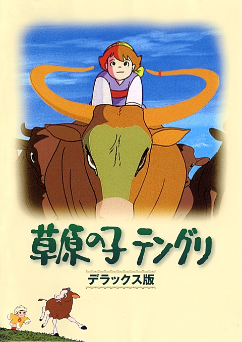
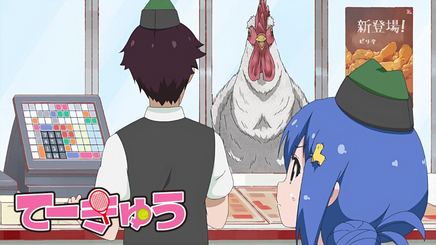
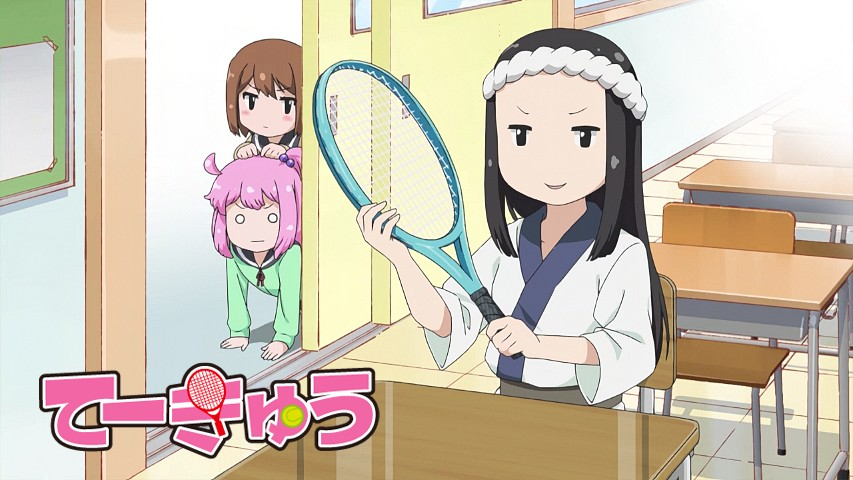

Bienvenue sur le site de la Nobluesky Fansub !
Sougen no Ko Tenguri vostfr

Bonsoir les amis,
aujourd'hui, pas de dragons en vue, mais un petit court mértage des familles.
Sougen no Ko Tenguri, ou Tenguri l'enfant des steppes, est un court métrage de 22 minutes datant de 1977 qui raconte l'histoire d'un petit garçon et d'un veau. Bon, là vous vous dites, pourquoi je regarderais ça ??
Ben parce que...
Sohryuden 02 vostfr
Bonsoir à tous !
Par cette journée de givre absolument superbe, j'écris cette news avec les doigts encore engourdis par le froid après ma balade hivernale. Passons à l'objet de cette news, Sohryuden. La tranquilité de nos héros est trop belle pour être vraie après tout, car la vie de dragon est assez mouvementée...
Teekyuu Saison 8 Ep 12 vostfr

Bonjour à tous,
pour cette 36e news de l'année (pas obligatoirement la dernière), voici le 12e et dernier épisode de Teekyuu en guise de cadeau de la part de la team, même si on est déjà le 26 !
J'espère que vous avez bien mangé, comme dans cette animé qui donne souvent faim à ceux qui travaillent dessus ! Car les filles du club de tennis sont de vraies morfales, ne l'oubliez pas :P
En attendant la saison 9 qui est pratiquement certaine, je me concentre sur ma tâche...
Teekyuu Saison 8 Ep 11 vostfr
Bonjour,
voici le 11e épisode de Teekyuu ! Aujourd'hui, un marathon un peu particulier organisé par le Lycée Kameido.
Il n'y avait pas trop de travail cette fois, ce qui me permet d'être en avance \o/
Suivront bientôt les V2 des épisodes 9 à 11 si nécessaire...
Teekyuu Saison 8 Ep 10 vostfr

Bonsoir à tous !
Voici, par ce temps brumeux et obscur, votre tranche de rire hebdomadaire, ça fait plaisir !
Quoi de mieux en attendant Noël...